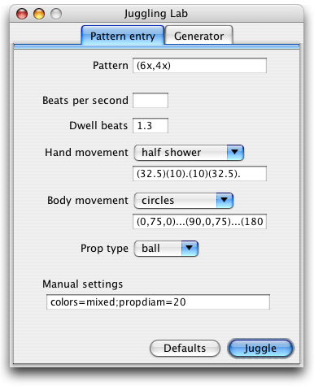

The pattern entry panel is where you type in a pattern to juggle, and then optionally adjust the pattern timing and movement of the hands. Its appearance is shown below.

Description of each part:
The text string representing hand movement allows you to specify the spatial location of the hands at the times of each throw and catch, as well as at points in time in between. Juggling Lab uses a spline interpolation algorithm to calculate hand locations at all times from the coordinates specified at these discrete points in time. The format is flexible enough to allow you to define hand movements of arbitrary complexity.
Imagine that you are the juggler, and define a coordinate system with the x axis going from
left to right in front of you (positive direction is to your right), the y axis
going in and out (positive is out), and the z axis going up and down (positive is up).
The point (x, y, z) = (0,0,0) lies at the midline of your body, in the "usual"
plane of juggling in front of you, and at a height that places your forearms roughly
parallel with the ground. We will specify hand movement in terms of coordinates in this system.
The simplest case is a single juggler, with only throw and catch positions defined. In this case,
the text string consists of a series of coordinate pairs in the form
"(throwx,throwz,throwy)(catchx,catchz,catchy).",
where each pair is assigned, in order, to a throw in the siteswap pattern.
All dimensions are in centimeters. Note in particular that the y and z coordinates have been interchanged; this is for convenience since leaving out components at the end will default them to 0, e.g., (30,10) is shorthand for
(x=30,z=10,y=0). Other facts:
throwx and catchx values are
automatically negated.(4x,6x), the first hand coordinate is assigned
to the left-handed '4x', the next to the right-handed '6x', and so on.As an example, the standard style for inside throws is
"(10)(32.5).", which means to throw at 10 cm from the centerline (at no elevation) and
make the next catch at 32.5 cm from the centerline (also at no elevation).
The standard style for Mills Mess is "(-30)(2.5).(30)(-2.5).(-30)(0)." if
you care to puzzle that one out.
The '.' separators in the examples above correspond to beats in the siteswap pattern. For
example, at 5 throws per second in an asynch pattern the throws are typically made at times 0.0 seconds, 0.2 seconds,
0.4 seconds, and so on. Catch times
are determined based on the dwell ratio setting. (The only throws not made exactly on-beat are '1'
throws, which are thrown slightly early and caught slightly late.)
Hand locations at other times (besides the throw and catch points) can also be defined, by adding
additional coordinates for each beat. For example, the style "t(10)c(32.5)(0,45,-25)."
is an "eating the apple on every beat" hand style that keeps the throw and catch positions of
inside throws,
but also defines the hand to be at location (0,45,-25) at a time exactly halfway between
each catch and subsequent throw. Note the use of 't' and 'c' to indicate
which coordinates correspond to throw and catch positions. A few rules:
't' and 'c' specifiers are optional; if unspecified, the first coordinate
is assumed to be the throw, and the last coordinate is assumed to be the catch.'t' specifier must attach to the first coordinate, if specified.'-' in place of a coordinate if you wish to occupy a point in time
but not define a hand coordinate. For example, consider the hand style
"t(10)(0)-(50)c(32.5).", where the pattern timing is such that the first throw and
catch are made at t=0.00 and t=0.20 seconds, respectively. Then in this case, the hand is defined to
be at location (0) at t=0.05 and (50) at t=0.15, but the hand
location at t=0.10 is left unspecified.'-', i.e., these positions
must always be explicitly defined.Lastly, when there are multiple jugglers, by default the hand style is applied to each of them
equally. To define different hand styles for each juggler, the format is
"<(style for juggler 1)|(style for juggler 2)| ... >". For example,
using the style "<t(10)c(32.5)(0,45,-25).|(-30)(2.5).(30)(-2.5).(-30)(0).>" with the pattern
<3|5> gives two jugglers, one "eating apples" and the other juggling
a 5 ball Mills Mess.
The text string defining body movement allows you to define angles and locations for each juggler's body, as a function of time. Its format is similar to the hand movement format above, with some differences:
(angle, bodyx, bodyy, bodyz), where "angle" is the
rotation angle around the z axis. The other coordinates "bodyx",
"bodyy", and "bodyz" are in a global coordinate system, unlike the hand
coordinates which are defined in a local coordinate system centered on each juggler. Default
coordinates for a single juggler are (angle,bodyx,bodyy,bodyz)=(0,0,0,100).
bodyz=0 is floor height.'t' and 'c' specifiers are not used."(0)....(90)....(180)....(270)...." defines a juggler slowly rotating at a fixed
position, with a total period of 16 beats.'<|>'
format as the hand movement setting. (If the number of jugglers in the body style is greater
than the number in the pattern, the extra jugglers in the body style are ignored.)Examples body styles:
"<(90).|(270,-125).|(90,125).|(270,-250).|(90,250).|(270,-375).>" = a line passing
formation for up to 6 jugglers."(0,75,0)...(90,0,75)...(180,-75,0)...(270,0,-75)..." = a single juggler slowly
walking in circles, with a total period of 12 beats."(0)(90)(180)(270)." = a silly example defining a single juggler doing a
counter-clockwise pirouette on every beat. (Note that, like the hand movement setting, multiple coordinates can
be defined within a single beat. The '-' spacer can also be used.)"(0).(0).(0).(0).(0).(0,0,0,150)." = a single juggler jumping up
and down.This entry method provides a way to manually control the siteswap pattern. Everything that can be set in the other portions of the siteswap input panel can be manually entered in this box as well. Manual settings override settings made in other parts of the panel.
The format of the entry is a text string comprised of
semicolon-separated assignment settings, for example "pattern=(4x,4x);bps=6.0;hands=(32.5)(10).". Variables are:
pattern – pattern to animate, in siteswap notation. No default.bps – number of beats per second, a floating point value. Default is
automatically calculated from the pattern.dwell – number of beats a catch is made prior to the subsequent throw. Values are floating-point numbers between 0.0 and 2.0; default is 1.3.hands – hand movement as a sequence of spatial coordinates, using the format described above.body – body movement as a sequence of angles and spatial coordinates, using the format described above.colors – determines the coloring of the props. Each color is defined either
by name or by its red/green/blue components on a 0-255 scale. Thus if this
setting is equal to {red} or {255,0,0}, the animator will use red balls.
If you define several colors, they will be assigned to the balls in a cyclical manner. For example,
{255,0,0}{0,255,0} means that ball 1 is red, ball 2 is green, ball 3 is red,
ball 4 is green, and so on. Recognized color names are:
black, blue, cyan, gray, green, magenta, orange, pink, red, yellow. Using the
value mixed (no braces) will apply a pre-defined mix of colors. Default is red balls.propdiam – diameter of the props, in centimeters. Values are
floating-point numbers greater than 0.0; default is 10.0.prop – prop type to use. Recognized prop names are ball, image, and ring; default is ball.gravity – acceleration of gravity, in cm/sec^2. Values are floating-point
numbers; default is 980.0 (earth standard).bouncefrac – fraction of a ball's energy retained after bouncing off the ground
(how much of its dropped height does it return to?). Values are floating point numbers greater than 0.0;
default is 0.9.The following variables are also supported for backward compatibility, but their continuing use is discouraged. Most are documented elsewhere:
tps – use bps instead.dratio – defined as half of dwell. In the typical
case where a given hand throws on every other beat, this equals the fraction of time the
hand is filled with a ball.
Values are floating-point numbers between 0.0 and 1.0; default is 0.65.throwx – use hands instead .rightthrowx – use hands instead.leftthrowx – use hands instead.catchx – use hands instead.rightcatchx – use hands instead.leftcatchx – use hands instead.balldiam – use propdiam instead.g – use gravity instead.